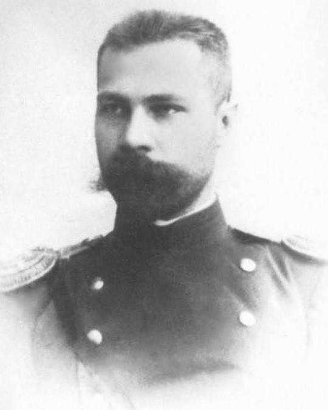
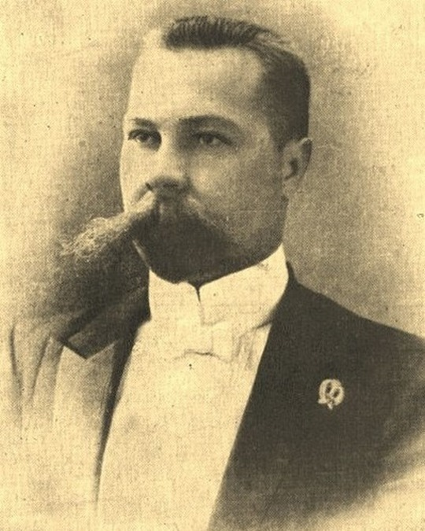
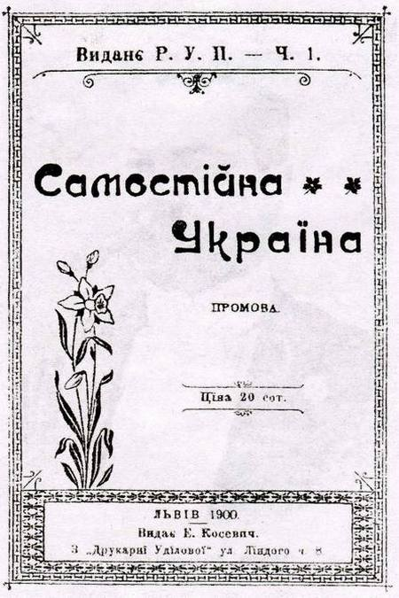
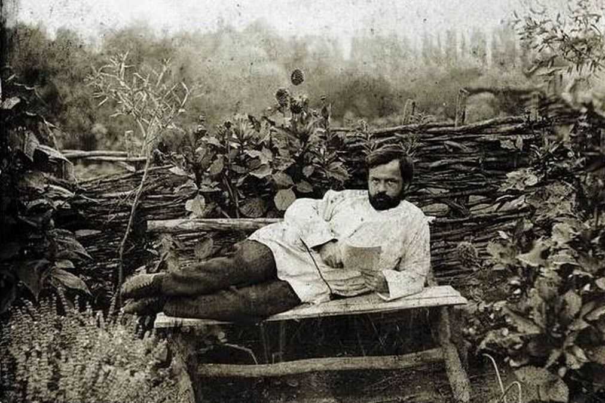

Апостол української державності. Так Миколу Міхновського назвав Петро Мірчук – український історик та активний
діяч політичної еміграції. Справді, значення цієї постаті для нас колосальне. Невідомо, чи отримали б українці
шанс на незалежність у 1917–1921 і 1939–1950-х роках, і чи здобули б її нарешті у 1991-му, якби ніколи не жив на
світі автор “Самостійної України” і “Десяти заповідей УНП” Микола Міхновський.
Микола Міхновський народився в останній день березня 1873 року. Його мала батьківщина – село Турівка
Прилуцького повіту Полтавської губернії, відоме ще з середини XVII століття. За сучасним адміністративним
поділом, воно належить до Згурівського району Київської області й розташоване на самій межі з Чернігівщиною.


Микола Міхновський був нащадком старовинного козацького роду. Його батько знав українських пісень та дум,
чому навчив і сина. А богослужіння правив українською.
Міхновський – надзвичайно багатогранна особистість. Протягом відносно короткого життя (51 рік) він встиг
заявити про себе і як юрист, і як громадський діяч, і як політик, і як ідеолог самостійництва, і як публіцист,
і
як військовик та організатор українських збройних сил.
В контексті військової діяльності ми вже згадували про нього в одному з попередніх матеріалів:
Початоктворення
українського війська
.
Міхновський не був першим, хто обґрунтував ідею державної незалежності й соборності України. За п’ять років до
нього це зробив галицький соціал-демократ Юліан Бачинський на сторінках книги “Україна irredenta”. Але саме
праця Миколи Міхновського стала справжнім маніфестом українського самостійництва. В основу “Самостійної
України”
було покладено промови автора, виголошені на Шевченківських святах 1900 року в Полтаві і Харкові. Окремою
брошурою їх опублікували у Львові без зазначення прізвища автора.

Основні тези, з якими далекого 1900 року виступив молодий і ще маловідомий харківський адвокат:
“Державна самостійність є головна умова існування нації, а державна незалежність є національним ідеалом у сфері
міжнаціональних відносин”.
“Яким правом російське царське правительство поводиться з нами на нашій власній території, наче з своїми рабами?
На підставі якого права на всіх урядах нашої країни урядовцями призначено виключно росіян (москалів) або
змоскалізуваних ренеґатів? На ґрунті якого права з наших дітей готують по школах заклятих ворогів і ненависників
нашому народові? Через що навіть у церкві панує мова наших гнобителів?”.
“Законами російської імперії зневажається право совісти, погорджуеться право свободи особистої, гнобиться навіть
недоторканість тіла”.
“Ми виписали на своєму прапорі: “Одна, єдина, неподільна, вільна, самостійна Україна від гір Карпатських аж по
Кавказькі”.
“Коли б навіть було доведено, що ми тільки різноманітність російської нації, то й тоді нелюдські відносини
росіян до нас освячують нашу до їх ненависть і наше моральне право убити насильника, обороняючись від насилля…
Нехай вчені розшукають, хто був кому родичем, – ображене чуття нації і кривда цілого народу гидують визнати
моральні зв’язки з російською нацією!”.
“На очах історії сильна, освічена і культурна інтелігенція України приняла в XVI і XVII віках польську
національність… Тоді сильним і могутнім замахом український народ породив нову інтелігенцію. Ця друга прийняла
російську національність протягом XVIII і XIX віків… Але український народ здобув у собі досить сили, здобув
навіть посеред найгірших обставин політичних, економічних та національних витворити собі нову третю
інтелігенцію”.
“Ми розуміємо, що боротьба буде люта й довга, що ворог безпощадний і дужий. Але ми розуміємо й те, що це вже
остання боротьба, що потім уже ніколи не настане слушний час до нової боротьби”.
“Ми виголошуємо, що ми візьмемо силою те, що нам належиться по праву, але віднято в нас теж силою”.
“Усіх, хто на цілій Україні не за нас, той проти нас. Україна для українців, і доки хоч один ворог чужинець
лишиться на нашій території, ми не маємо права покласти оружжя”.
Не менш відомими твором Міхновського є десять заповідей для членів Української
народної
партії,
розроблені ним у
1904 році:
-
Одна, єдина, неподільна, від Карпат аж до Кавказу самостійна, вільна, демократична Україна – республіка робочих
людей.
-
Усі люди – твої браття, але москалі, ляхи, угри, румуни та жиди – се вороги нашого народу, поки вони панують над
нами й визискують нас.
-
Україна для українців! Отже, вигонь звідусіль з України чужинців-гнобителів.
-
Усюди й завсігди уживай української мови. Хай ні дружина твоя, ні діти твої не поганять твоєї господи мовою
чужинців-гнобителів.
-
Шануй діячів рідного краю, ненавидь ворогів його, зневажай перевертнів-відступників – і добре буде цілому твоєму
народові й тобі.
-
Не вбивай України своєю байдужістю до всенародних інтересів.
-
Не зробися ренегатом-відступником.
-
Не обкрадай власного народу, працюючи на ворогів України.
-
Допомагай своєму землякові поперед усіх, держись купи.
-
Не бери собі дружини з чужинців, бо твої діти будуть тобі ворогами, не приятелюй з ворогами нашого народу, бо ти
додаєш
їм сили й відваги, не накладай укупі з гнобителями нашими, бо зрадником будеш.
Зараз нечасто згадують про те, що в розпал революції в Російській імперії 1905 року Микола Міхновський висунув
проект конституції самостійної України:

Микола Міхновський випередив свій час. Більшість сучасників його не зрозуміли, вважали “фантастом” і
“авантюристом”. Грушевський згодом характеризував Міхновського як “нашого фашиста” (це слово тоді ще не мало
виразно негативної конотації), протиставляючи його соціалістам і демократам. Винниченко і Петлюра звинувачували
Міхновського в “ідейній обмеженості”, бо, на їхнє переконання, національне він ставив вище за соціальне.
Скоропадський називав погляди Міхновського “вкрай шовіністичними”. Та жоден з цих політиків – з різних причин –
не зміг надовго втримати незалежність України.
На відміну від них, Микола Міхновський практично ніколи не мав доступу до реальних важелів влади. Під час
Української революції перебував у опозиції – до більшості у Центральній Раді, до гетьманського уряду, до
Директорії УНР. Але ставши свідком поразки визвольних змагань, а потім ще й “поспілкувавшись” кілька днів зі
слідчими ДПУ, він не витримав.
3 травня 1924 року Микола Міхновський – за офіційною версією – покінчив життя самогубством на території садиби
свого приятеля Володимира Шемета (Київ, вулиця Жилянська, 76). Похований на Байковому цвинтарі. А у травні
2017-го невідомі викрали бронзове погруддя з його могили.